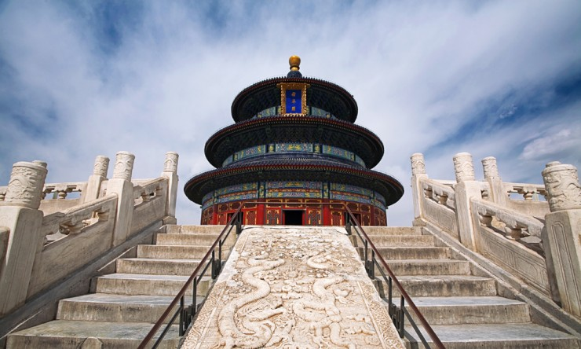

Top 10 Ancient Civilizations of the World
By: Mia
1. Ancient Egypt
The Remarkable Legacy of Ancient Egypt
When we think of ancient civilizations, it's hard not to picture the sweeping monumental structures of Egypt. It's said that when Alexander the Great first arrived in Egypt, he was so awe-struck by the beautiful architecture that he decided to found a new city in its image. From the Great Pyramids of Giza to the Sphinx, the legacy of Ancient Egypt is one of enigma, splendor, and power.
For nearly 3000 years, the Egyptians developed a rich culture and sophisticated society that has fascinated scholars and laypeople alike. They were pioneers in mathematics, writing, medicine, and astronomy. It's hard to imagine life without the inventions and concepts that the Egyptians pioneered, such as the calendar and paper. The Egyptians are also renowned for their artistic genius, with intricate hieroglyphs, statues, and frescoes that offer insight into their beliefs and way of life.
Egyptian society was also incredibly complex, with pharaohs gaining power through military might, intermarriage, and a cult of personality. The civilizations that followed, such as the Greeks and Romans, were deeply influenced by the Egyptians. Despite their decline, the impact of Ancient Egypt on modern society is hard to overstate.
In this section of our website, we will explore the fascinating world of Ancient Egypt. We will delve into the political and social structures that made it such a robust civilization. We will learn about the gods they worshipped and how beliefs in the afterlife influenced daily life. We'll also examine their art, architecture, and contributions to science, medicine, and mathematics. Join us as we unlock the secrets of this amazing civilization!
ad space
2. Ancient Greece
Discovering the Roots of Modern Western Civilization: A Journey Through Ancient Greece
When it comes to ancient civilizations, there are few as influential and impactful as Ancient Greece. The Greeks achieved remarkable feats during their time, from laying the foundations of democracy to pioneering advancements in science, philosophy, and the arts. In this section of our website dedicated to the top 10 ancient civilizations of the world, we dive deep into the history, culture and legacy of Ancient Greece.
At the forefront of the Mediterranean world from circa 700 BC to 146 BC, Ancient Greece left an indelible mark on Western civilization, and its influence is still felt today in modern politics, science, and art among many others. It was a society characterized by its intellectual and cultural advancements, notable individuals and landmarks such as Alexander the Great, Socrates, Aristotle, the Parthenon, Acropolis and Olympia, to mention but a few.
Furthermore, the Greeks were also renowned for their military prowess, as illustrated by their numerous victories and conquests throughout the Ancient world, including the Persian Wars and the defeat of the Macedonian Empire.
However, the rise and fall of Ancient Greece was not without its share of difficulties, economic and political crisis, and military conquests by their neighboring enemies, such as the Persians and the Romans. Nevertheless, despite their challenges, the Greeks managed to leave a considerable cultural legacy that continues to inspire and fascinate to this day.
In this section of our website, we explore the various facets that made Ancient Greece the powerhouse of its time, from its art and architecture, philosophy, mythology, and the sciences. Join us on a journey to discover the rich and varied history of Ancient Greece, an essential cornerstone of our modern Western world.
ad space
3. Ancient Rome
Ancient Rome: A Civilization Ahead of its Time
The Ancient Roman Empire is one of the most well-known and well-studied civilizations in history. Its impact still echoes throughout the world today, with many modern-day practices having originated from Roman innovations. From its intricate and complex legal system to its impressive infrastructure, Ancient Rome was a civilization that stood the test of time.
At its height, the Roman Empire covered a vast expanse of land, from modern-day Spain to Israel, encompassing all of Western Europe and parts of North Africa. But the Empire was more than just a territorial conquest; it was a cultural center that paved the way for modern Western civilization.
The citizens of Rome were known for their engineering prowess, building aqueducts, roads, and bridges that stood for centuries. The city was also famous for its expansive Colosseum, which served as a venue for lively entertainment, brutal gladiator battles, and public executions.
While Rome's engineering feats were impressive, it was also a center of art and culture, producing legendary works of literature, sculpture, and architecture. The Roman Senate served as an intellectual hub, where great thinkers like Cicero and Seneca debated political theory and ethics.
Despite its many achievements, Rome would eventually fall from power due to a mix of economic decline, political turmoil, and external invasions. However, its legacy lives on, and the ancient Romans continue to fascinate us with their unique way of life.
Explore more about the Ancient Roman civilization and discover how its influence still shapes our world today.
ad space
4. Ancient China
In the vast expanse of time, stretching back thousands of years, many civilizations have risen and fallen. Each of these cultures and societies has contributed to humanity's shared history and shaped the world as we know it. Among these many civilizations, Ancient China stands out as one of the most influential and enduring.
From the continent-spanning Qin dynasty to the Silk Road trading empire, Ancient China boasts a rich cultural heritage that spans centuries. Known for their intricate art, innovative technologies, and philosophical beliefs that continue to influence the world today, the ancient Chinese left an indelible mark on human history.
The scope and importance of Ancient China's influence is difficult to overstate. From pioneering agricultural techniques to developing paper and gunpowder, the ancient Chinese were known for their ingenuity and resourcefulness. Their art, too, was complex and symbolic, often depicting the natural world and spiritual beliefs in vivid and sometimes abstract forms.
Yet, perhaps the most enduring contribution of Ancient China was its philosophy. The teachings of Confucius, Laozi, and other ancient Chinese philosophers continue to influence modern thought, both in their home country and around the world.
As you explore the wonders of Ancient China, it is easy to see why this civilization continues to captivate people to this day. By examining their society, art, and philosophy, we can gain a deeper understanding of our shared past and the unique contributions that each culture has made to human history. Join us as we delve deep into the world of Ancient China and discover the secrets of this fascinating and enduring civilization.
ad space
5. Ancient India
Ancient India: A Cultural and Technological Marvel
India is a land of diverse cultures, beliefs, and traditions. With a rich and awe-inspiring heritage that spans over 5,000 years, ancient India is considered to be one of the cradles of civilization. The Indus Valley Civilization (2600–1900 BCE), also known as the Harappan Civilization, was one of the earliest and most advanced urban civilizations in the world. It is well known for its sophisticated and well-planned cities, including Mohenjo-daro and Harappa.
During the Vedic period (1500–500 BCE), the Indian subcontinent witnessed the composition of the Rigveda, one of the oldest texts in the world. It served as the foundation of Hinduism, one of the largest religions in the world.
Ancient India also witnessed the invention of the decimal system and zero, astronomical discoveries, including the calculation of the solar year, and advanced medical practices.
The Golden Age of India, also known as the Gupta period (320–550 CE), is considered to be the pinnacle of ancient Indian civilization. It witnessed the emergence of classical art and literature, including the famous Kamasutra, the construction of world-renowned temples, and the development of metallurgy, sculpture, and coinage.
India's contribution to mathematics, philosophy, and spirituality has left a lasting influence on the world. The Bhagavad Gita, Mahabharata, and Ramayana are some of the most significant literary works in the world.
Visiting India's ancient sites is a thrilling experience for travelers seeking to unravel the mysteries of this ancient civilization. From the majestic Taj Mahal to the magnificent Ajanta and Ellora caves, the country is dotted with numerous breathtaking monuments and historical sites.
In summary, ancient India was a cultural and technological marvel that has left an indelible mark on the world. Indulge yourself in a journey of discovery to explore the rich heritage of this exotic land.
ad space
6. Ancient Persia
When we think of ancient civilizations, Greece, Rome, and Egypt often come to mind. But one civilization that is often overlooked is Ancient Persia. Located in what is now modern-day Iran, Ancient Persia was a powerful empire that lasted from 550 BCE to 330 BCE. It is the sixth in our list of top 10 ancient civilizations of the world, and for good reason.
The Persians were known for their military prowess, diplomacy, and advancements in art and architecture. They were also a melting pot of different cultures and languages, with the Persian language serving as a bridge between East and West. One of their most famous leaders was Cyrus the Great, who expanded the Persian Empire to become the largest empire the world had seen at the time.
Under Cyrus the Great, the Persians were known for their religious tolerance and respect for other cultures. They allowed conquered peoples to keep their own religions and customs, which made it easier for them to maintain a large, diverse empire. The Persians were also known for creating the first postal system, which allowed for faster communication and trade throughout the empire.
In terms of art and architecture, the Persians were known for their intricate details and use of bright colors. Perhaps their most famous architectural feat is the city of Persepolis, which was built as a ceremonial capital for the Persian Empire. Though much of it was destroyed by Alexander the Great, the ruins of Persepolis still stand today as a testament to the engineering skills of the Persians.
Overall, Ancient Persia is a civilization that deserves more recognition for its contributions to the world. From its military conquests to its advancements in art and architecture, the Persians were a force to be reckoned with in ancient times.
ad space
7. Ancient Mesopotamia
The Rise and Fall of the Pioneers of Civilization
Ancient Mesopotamia, known as the land between two rivers, was the cradle of civilization that shaped the world we know today. It was the birthplace of numerous innovations, such as writing, agriculture, metallurgy, and urbanization. This early civilization was comprised of various groups, including the Sumerians, Akkadians, Babylonians, and Assyrians, who left behind a legacy that had a significant impact on the development of human history.
The Mesopotamian civilization emerged in the fourth millennium BCE, and its rise was influenced by its fertile land and the Tigris and Euphrates rivers that flowed through it. This allowed people to live in a fixed location where they could cultivate crops, rear livestock, and generate agricultural surpluses to support a growing population. With the rise of cities, their societies became more complex, and rulers emerged to govern them.
The Mesopotamian civilization had a profound impact on the surrounding regions and beyond. They advanced in astronomy and mathematics, developed the first written language, created the first wheel and plow, and built the first-ever arch bridges. Their system of government and laws served as a model for other civilizations that followed.
However, the Mesopotamian civilization was not impervious to the ravages of time, wars, invasions, and internal conflicts. This civilization faced many challenges that caused its decline, such as environmental degradation, regional wars, and invasions from neighboring empires. Despite the challenges they faced, the Mesopotamians were pioneers of human civilization whose contributions are still felt to this day.
Ancient Mesopotamia's legacy is an essential part of modern civilization. It shaped the way we live today with its systems of government, innovations in agriculture and craftsmanship, and advancements in science and technology. As we explore the ten ancient civilizations of the world, we cannot overlook the contributions of the Mesopotamian civilization.
ad space
8. Ancient Maya
The Magnificent Legacy of the Ancient Maya Civilization
Deep within the verdant jungles of Central America lies the awe-inspiring civilization of the Ancient Maya. For over six centuries, they dominated the region with their impressive architectural feats, intricate hieroglyphic script, and astronomical precision. Even after the collapse of their civilization, their legacy still endures, captivating minds and imaginations across the world.
The Ancient Maya Civilization was known for their innovative methods in agriculture, trade, and their impeccable knowledge of the stars. The majestic pyramids, monuments, and intricate carvings on their ornate temples still stand the test of time, providing a glimpse into their rich culture and beliefs. The mysterious disappearance of their civilization remains one of the greatest unsolved mysteries of our time.
The Mayans were skilled mathematicians and astronomers, a fact that is evident in their incredible astronomical observatories and calendrical systems that predicted the precise dates of various celestial events. Despite being conquered by the Spanish in the 16th century, their rich cultural heritage and traditions continue to thrive in present-day Mexico, Belize, and Guatemala.
Visiting the magnificent ruins of the Ancient Maya Civilization is a must for any history enthusiast. Delve deeper into their complex social structure and discover the awe-inspiring artifacts and artifacts of their advanced civilization by exploring our comprehensive collection of articles, photographs, and expert insights.
Unlock the secrets, discover the magnificence, and unravel the intricate history of the Ancient Maya Civilization on your next journey into the past.
ad space
9. Ancient Aztec
Civilization: A Powerful Mesoamerican Empire that Built its Future on Blood, Gold, and Sacrifice
When it comes to the powerful empires that contributed to humanity's progress, few can match the achievements and legacies of the mighty Aztec civilization. Rising from the humble origins of a small tribe in the arid lands of modern-day Mexico, the Aztecs developed into a spectacular civilization that impressed and bewildered their contemporaries and continues to fascinate millions of people today. As number nine in our countdown of the top 10 ancient civilizations of the world, the Aztec civilization deserves its place of honor, not only because of its military might and complex society but also because of its intricate religious practices, artistic achievements, and technological innovations.
The Aztec civilization, also called Tenochtitlan after its mythical founder, was one of the last Mesoamerican empires that flourished before the arrival of European explorers. According to tradition, the Aztecs were guided by their patron god, Huitzilopochtli, who instructed them to establish a city on a swampy island in the middle of a lake. With determination and ingenuity, the Aztecs managed to transform this inhospitable terrain into a magnificent urban center that impressed even the most skeptical visitors. The capital of Tenochtitlan, with its awe-inspiring pyramids, bustling markets, and intricate canals, was a masterpiece of urban planning and engineering that rivaled the splendor of other great cities of the ancient world.
But the Aztecs' rise to power was not without bloodshed and sacrifice. To maintain their dominance over neighboring tribes and expand their territory, the Aztecs engaged in frequent wars and took captives whom they sacrificed to their gods in elaborate rituals. These practices, which involved cutting out the hearts of the victims and offering them to the sun, the rain, and other deities, were deeply woven into the fabric of Aztec society and religion. They also produced vast amounts of gold, silver, and precious stones that the Aztecs used for trade and tribute.
However, the Aztecs' violent practices should not overshadow their other achievements, such as their magnificent art and architecture, their complex social hierarchy, and their sophisticated knowledge of astronomy and mathematics. From their intricate calendar system to their impressive aqueducts and roads, the Aztecs demonstrated a remarkable ability to combine innovation and tradition to create a unique civilization that still fascinates us today. Whether you are interested in the Aztecs' military conquests, their religious beliefs, or their cultural legacy, the Aztec civilization is a rich and rewarding topic that offers endless opportunities for exploration and discovery.
ad space
10. Ancient Inca
The Magnificent and Mysterious Ancient Inca Civilization
The ancient Inca civilization was one of the most successful empires that existed in South America, with a rich and storied history that spanned several centuries. The Inca people are synonymous with impressive architecture, innovative agricultural techniques, goldsmithing, and a complex system of government. It is not surprising that the Inca people are among the top ten ancient civilizations of the world. But beyond these remarkable achievements, there are fascinating stories and stunning facts that will capture your imagination.
The Inca civilization began around 1438 AD, and flourished for over four centuries until the Spanish Conquistadors arrived on their shores. At their peak, the Inca Empire was one of the most significant and sophisticated civilizations in the world at the time with over twenty million inhabitants. They achieved impressive feats of engineering, such as the ancient city of Machu Picchu, which still stands today as a testament to their ingenuity.
What was equally intriguing about the Inca civilization is their unique social system. The Inca had no written language, but instead relied on a complex system of threads, knots, and cords called quipus to communicate vast amounts of information. They also had a remarkably efficient form of government, which was rooted in their religion, making them a theocratic society.
But like all ancient civilizations that have since disappeared, the Inca left behind a remarkable legacy. From the ruins of their once-great cities, we have learned much about their advanced engineering techniques, social organization, and religious beliefs. In recent years, there has been a resurgence of interest in the ancient Inca civilization, and with good reason. They were a remarkable people who achieved great things, and their legacy continues to inspire and fascinate people to this day.
ad space
Conclusion
After a journey through the Top 10 Ancient Civilizations of the World, it’s time to look at the big picture and draw some conclusions. From the dazzling pyramids of Egypt to the enigmatic Moai statues of Easter Island, we’ve explored the history, art, and culture of some of humanity’s most fascinating civilizations. But what ties them all together? What can we learn from these ancient societies that still resonate today?
One of the most notable takeaways from our exploration is the incredible resilience of human beings. These civilizations flourished in environments that could be harsh, challenging, and unpredictable. Yet they found ways to adapt, innovate, and thrive. Whether it was the sophisticated irrigation systems of the Maya or the impressive engineering feats of the Romans, humans have always been capable of pushing the boundaries of what is possible.
Another common thread throughout these civilizations is the importance of culture and tradition. Whether it was the elaborate religious rituals of the Aztecs or the intricate artwork of the Greeks, these societies placed a high value on creativity and intellectual pursuits. They understood that the arts and humanities were essential to the human experience and provided a sense of meaning and purpose.
Perhaps the most significant lesson, however, is the importance of history itself. By studying these ancient civilizations, we gain insights into our collective past and can draw connections between the struggles and triumphs of our ancestors and our own lives. We can learn from their mistakes and celebrate their achievements, reminding us of both the grandeur and fragility of human civilization.
Ultimately, the Top 10 Ancient Civilizations of the World are a testament to the enduring curiosity and ingenuity of humanity. They remind us that no matter where we come from or what challenges we face, we are capable of creating incredible things and leaving a lasting impact on the world.
ad space